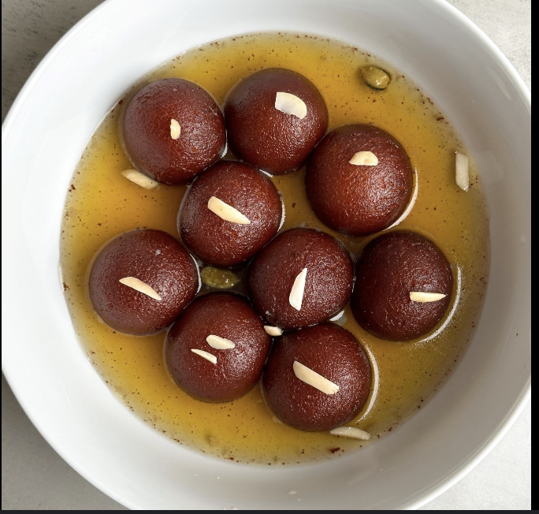
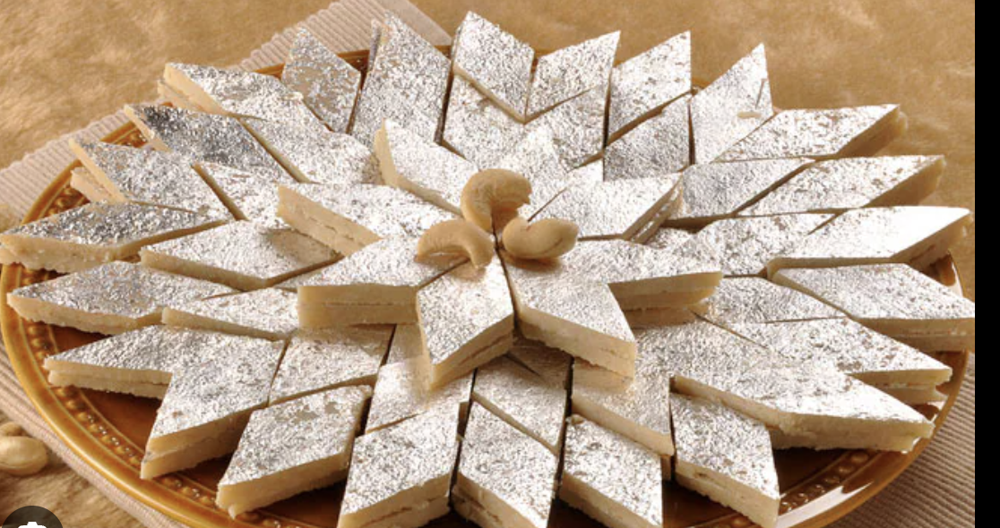

gulab jamun
ingredients
- Khoya (Mawa)
- All-purpose Flour (Maida)
- Sugar Syrup
recipe
- Prepare Sugar Syrup: Boil sugar and water with cardamom until it reaches a sticky, single-thread consistency. Set aside and keep warm.
- Make Dough and Fry: Knead khoya, maida, and baking powder into a smooth dough. Shape into small balls and fry in ghee on low heat until golden brown.
- Soak and Serve: Add the fried gulab jamuns to the warm syrup and let them soak for at least 2 hours before serving. Enjoy!

barfi
ingredients
- Milk or Milk Powder
- Sugar
- Ghee
recipe
- Prepare Base: Heat ghee in a pan, add milk or milk powder, and cook until it thickens, stirring continuously.
- Sweeten and Flavor: Add sugar and cardamom, and cook until the mixture becomes soft and leaves the sides of the pan.
- Set and Serve: Pour into a greased tray, flatten, add nuts if desired, and let it cool. Cut into squares once set. Enjoy!
